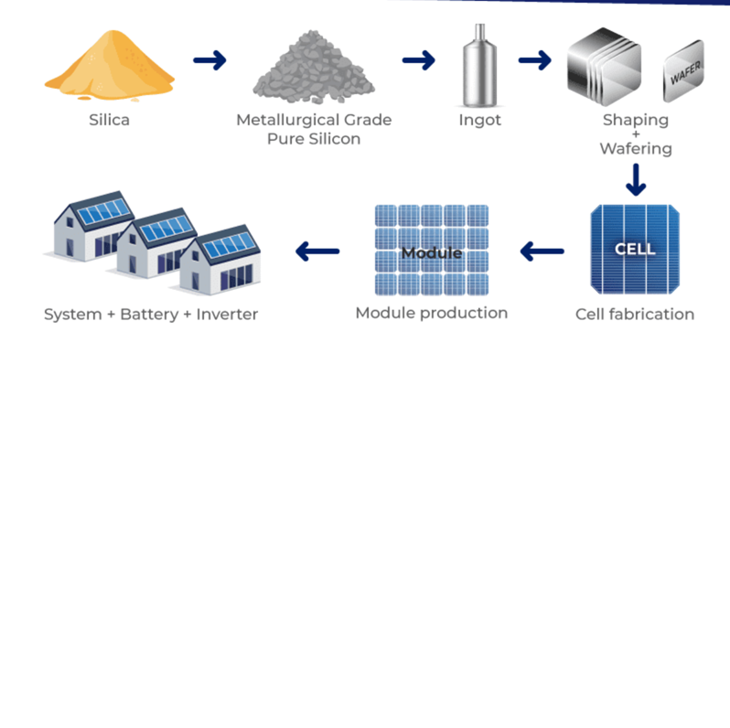

The Manufacturing Process
Solar panels start with sand! Sand has silicon, which is purified and turned into crystals. Then, they're cut into thin wafers, coated, and assembled into panels. It's like baking a high-tech cake!
- Mine silicon from sand.
- Melt and form crystals.
- Cut into cells and add wires.
- Put in a frame and test.